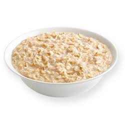

CJ's Protein Overnight Oats

Description
Try CJ's favorite recipe for protein-packed overnight oats! This recipe is very basic and can be customized to meet any caloric needs / taste buds.
This takes about 30 minutes or so to prep -- and an evening in the refrigerator to set -- but after that, it's ready to go for any meal.
All you need is some oats, your favorite protein powder (CJ likes a Banana Maple French Toast vegan protein), a stovetop, a microwave, and your toppings of choice (we'll reference CJ's standard in this recipe)!
Ingredients
- 1 cup rolled oats
- 400g boiling water
- 3 packets stevia / calore-free sweetener
- A pinch (or two) of pink himalayan sea salt
- 1 scoop protein powder
- 125g Chobani Nonfat Zero Sugar greek yogurt
- 2 tbsp whipped cream cheese
- 1 tablespoon peanut butter
Steps
- Fill a kettle with water; bring it to a boil on the stovetop.
- Place your raw oats into a food container with your chosen sweetener and salt. Add ~400g of boiling water
and stir.
- Microwave for 3:30, stopping intermittently to stir and keep the mixture from bubbling over the edges of your container.
- Add the lid to the container and place in the fridge for 30 minutes.
- After 30 minutes, pull the oats out of the fridge, add your protein powder, and stir it thoroughly.
- Add greek yogurt, whipped cream cheese, peanut butter, and mix it in.
- Put the lid back on, put it back in the fridge, and let it sit overnight.
Additional Notes
- Please customize your flavors / toppings! Just because the recipe calls for peanut butter doesn't mean you have to use that -- use a different topping (pumpkin seeds, granola, etc.) if you want!
- Adjust to your caloric needs! If you need more carbohydrates in this meal, maybe use 1.5 cups of oats instead (and just add a bit more water).
Cater any ingredient here to your individual caloric needs. Remember, we all have different ways of eating, metabolisms, and needs at every meal!
Home